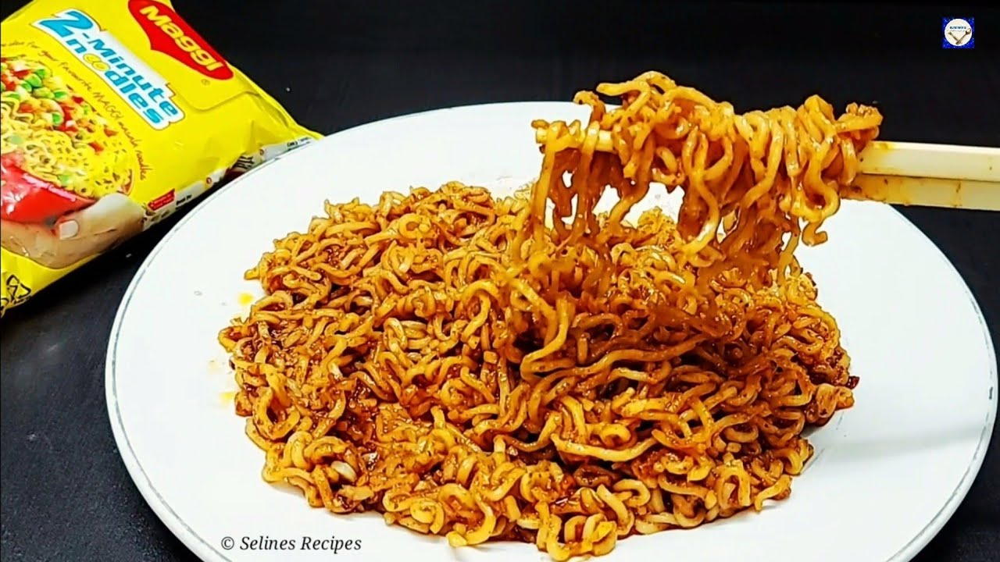

korean-maggie

A picture of a finished and yummy korean-maggie
The picture shows delicious korean maggie with a packet of maggie that was used
in the side, as well as some chopsticks that are used to eat it.
contents:
- Maggie Masala
- Sesame Seeds
- Soya Sauce
- Tomato Sauce
- Salt
- Chilli powder
- Coriander leaves
- Oil
Steps:
- Boil the maggie in hot water for 10 min
- At the side take the maggie masala in a bowl
- Add salt and chilli powder according to taste
- Add soya and tomato sauce, 1 tsp and 4 tsp respectively
- Add Seasame seeds and coriander leaves
- Boil oil for 2mins and add it to the mixture
- take the boiled maggie and mix it with the mixture
- delicious korean maggie is ready!!
Home